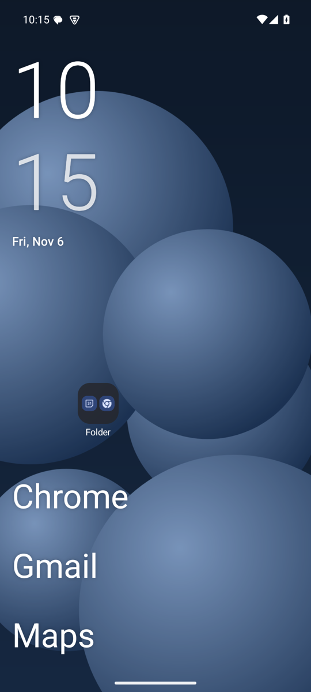
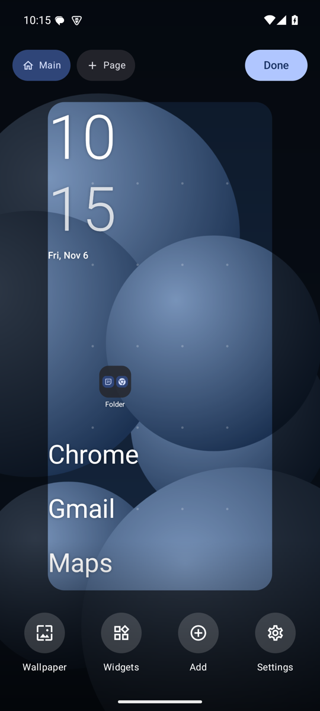
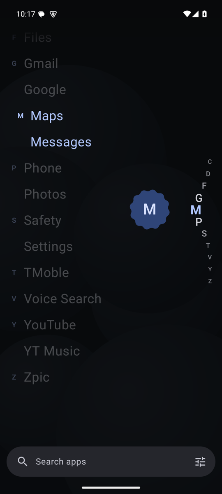
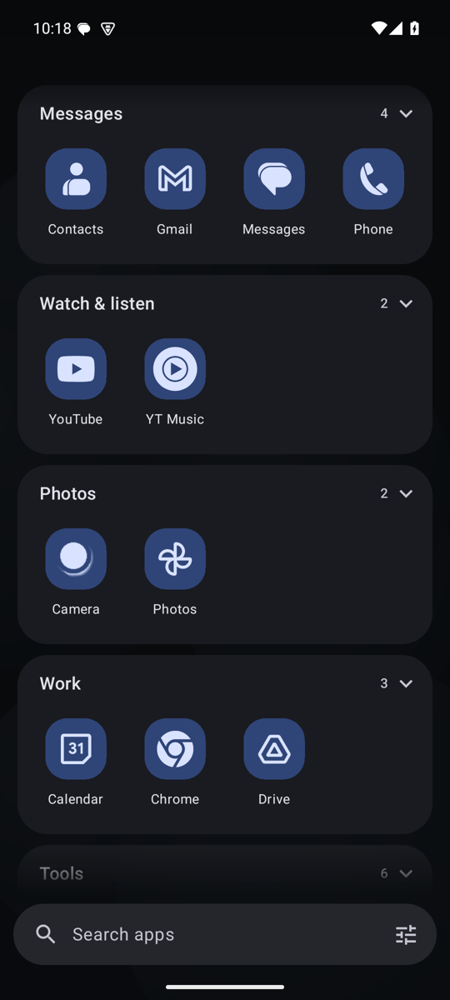
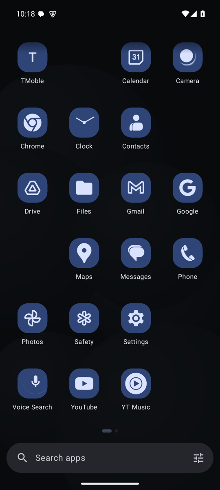
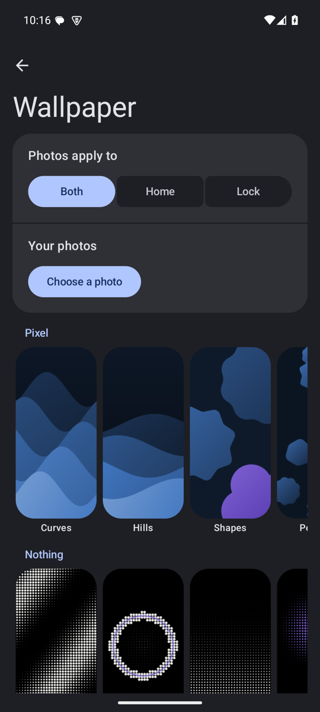
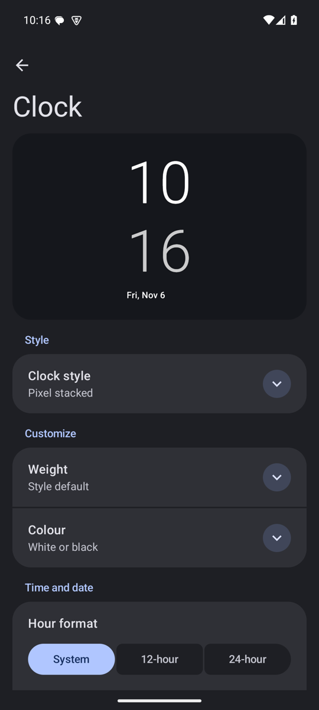

Zpic Launcher: a minimal Android launcher with Material You
A free, open-source home screen for Android 10 and later. Calm by default, with a grid you control, themed icons for every app, and no ads or tracking.
Download the APK View source on GitHubScreenshots







Features
| Home screen | Fine grid of up to 16 columns and 20 rows, multiple pages, widgets, widget stacks, folders, a dock, undo and layout presets |
|---|---|
| App pages | Text-only A to Z list, icon grid, custom pages, or smart groups |
| Icons | Themed icons for every app, 7 shapes, and Nova-compatible icon packs |
| Colour | Material You system colours, colours from your wallpaper, or your own |
| Clocks and wallpapers | 12 clock options and 60 original wallpapers you can recolour |
| Focus | Scheduled focus modes, a pause before distracting apps, daily open counts, hidden apps, and a notification shelf |
| Search | Apps, contacts, shortcuts and phone settings, with a built-in calculator |
FAQ
- What is Zpic Launcher?
- Zpic is a free, open-source home screen app for Android 10 and later. It has a minimal grid home screen, Material You colours, and four app page layouts.
- Is Zpic Launcher free?
- Yes. It is free and open source under the Apache 2.0 licence, with no ads, and it has no internet permission.
- Does Zpic theme icons for apps without a themed icon?
- Yes. Zpic uses an app's monochrome icon when it has one. Otherwise it derives a logo from the icon image, and falls back to a letter.
- Is Zpic on the Play Store?
- Not yet. Install the APK from GitHub Releases.